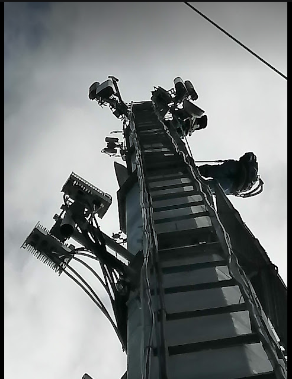

Redes y Telecomunicaciones
Configuración de redes GPON y FTTH, fibra óptica, cableado estructurado, MikroTik y Cisco.
Portafolio de Edison Fabricio Oñate Cañar
Especialista en Infraestructura, Redes y Ciberseguridad
Bienvenidos a mi portafolio. Aquí encontrarás información sobre mí, y las habilidades que he desarrollado durante más de 9 años trabajando en el área de tecnología y los proyectos en los que he participado junto a mi emprendimiento System World Tech.
Ver mis proyectosMi nombre es Edison Fabricio Oñate Cañar. Soy Técg. Superior en Redes y Seguridad Informática y actualmente estoy cursando la carrera de Ingeniería en Sistemas Inteligentes en la Universidad Ecotec.
Trabajo desde hace varios años en el área de infraestructura tecnológica, redes de telecomunicaciones y sistemas de seguridad. Me gusta mucho el tema de la ciberseguridad y las normativas como ISO 27001, y por eso decidí crear mi propio emprendimiento llamado System World Tech, con el que ofrezco servicios de instalación de redes, videovigilancia, control de acceso y asesoría en seguridad de la información.
Mi objetivo es seguir creciendo profesionalmente, terminar mi carrera y consolidar mi emprendimiento como una empresa confiable en el Ecuador.
Configuración de redes GPON y FTTH, fibra óptica, cableado estructurado, MikroTik y Cisco.
Implementación de ISO 27001, análisis de amenazas y políticas de seguridad de la información.
Instalación de cámaras Avigilon y Pelco, control de acceso Lenel OnGuard y CCTV.
Mantenimiento de servidores Windows y Linux, respaldo de información y soporte a usuarios.
Lider tecnico en la face de contruccion del metro de Quito, implementando la red de fibra óptica y cable radiante en las estaciones y túneles del Metro. También di mantenimiento a los servidores de videovigilancia.
Ver másInstalación de sistemas de seguridad electrónica, cámaras, control de acceso, fibra óptica certificada y cableado estructurado categoría 6A.
Ver más
Migración de antenas de microonda e implementación de red GPON en varias ciudades de la sierra y la costa del país.
Ver másSi quieres comunicarte conmigo, puedes dejarme un mensaje en el siguiente formulario.